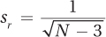
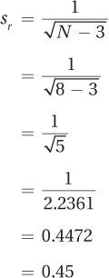
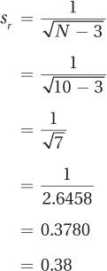
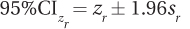

506
Step 6 Interpret the Results
To interpret a Pearson correlation coefficient, there are three questions to be addressed. The answers to these three questions provide the raw material from which the researcher selects the most salient pieces to build a four-point interpretation. The three questions are the same ones used in the interpretation of an independent-samples t test:
Was the null hypothesis rejected?
How big is the effect?
How wide is the confidence interval?
After those three questions have been covered for the Pearson r, it is time to add more nuance and depth to the interpretation with a fourth question, “Did this test have adequate power?” As we learned in Chapter 6, power is the likelihood of being able to reject the null hypothesis when it should be rejected. Having adequate power is usually raised as a concern when the null hypothesis is not rejected. So, we will save our exploration of power until the next worked example, when Dr. Solomon interprets the Pearson r for the relationship between age of walking and intelligence. Be sure to read the worked example—it covers new ground.
Until then, we will follow Dr. Paik as he interprets the results from his marital satisfaction study. In that study, he obtained a random sample of eight couples from the city where he lives. For each couple, he measured the husband’s degree of gender role flexibility and the wife’s level of marital satisfaction in order to see if the two variables were related.
To determine if the null hypothesis is rejected, Dr. Paik will use the decision rule from Step 4. For the marital satisfaction study, the observed value of r was calculated, in Step 5, to be .76. In Step 4, the critical value of r was found to be ±.707. Dr. Paik has to decide:
Is .76 ≤ – .707 or is .76 ≥ .707?
Is –.707 < .76 < .707?
The second part of the first statement, .76 ≥ .707, is true, so the null hypothesis is rejected. Figure 13.20 shows how the results fall in the rare zone. The null hypothesis is rejected and the results are called statistically significant. Dr. Paik can say that this Pearson r of .76 is statistically different from zero. In APA format, he would write
r(6) = .76, p < .05
APA format for a Pearson r contains five pieces of information: (1) what test is being done, (2) how many cases there are, (3) the observed value of the test statistic, (4) what alpha level was selected, and (5) whether the null hypothesis was rejected.
The r tells that the test was a Pearson r.
507
The 6 in the parentheses is the degrees of freedom for the test. Degrees of freedom for a Pearson correlation coefficient are calculated by subtracting 2 from the sample size. Thus, 2 can be added to the degrees of freedom to determine the sample size, which was 8.
The .76 is the value of the test statistic found in the sample.
The .05 shows what level alpha was set and that a 5% chance of making a Type I error exists.
Finally, p < .05 reveals that the results landed in the rare zone, and the null hypothesis is rejected.
What conclusion can Dr. Paik draw so far? He has rejected the null hypothesis, which means he is forced to accept the alternative hypothesis, that there is a relationship between these two variables. Being “forced” to accept the alternative hypothesis is not a hardship. Remember, it is almost always the alternative hypothesis that the researcher believes to be true. Dr. Paik should bear in mind that there is a 5% chance that his decision to reject the null hypothesis is wrong. He should state that the alternative hypothesis is probably true.
If the alternative hypothesis is true, it doesn’t tell much besides the fact that the population value of the correlation (ρ) between X and Y is not zero. Phrased without the negative, Dr. Paik can conclude that some relationship exists between the two variables in the population, but he doesn’t know how much. At this point, how strong ρ is remains unknown, but it is possible to comment on its direction, whether the relationship is direct or inverse:
If the null hypothesis is rejected and the sign of the r is positive, then a researcher would conclude that the association between X and Y is a positive one. This means that, in general, cases with high scores on X have high scores on Y, and cases with low scores on X have low scores on Y. This is a direct relationship.
508
If the null hypothesis is rejected and the sign of the r is negative, then a researcher would conclude that the association between X and Y is a negative one. This means that, in general, cases with high scores on X will have low scores on Y, and cases with low scores on X will have high scores on Y. This is an inverse relationship.
If the null hypothesis is not rejected, then r is not statistically different from zero. This means sufficient evidence does not exist to conclude that there is a relationship between X and Y. One can’t say that the relationship isn’t a zero relationship, and one can’t assert that it is a zero relationship. The researcher is left in limbo.
At this point, Dr. Paik’s interpretation would read something like this:
The relationship between a husband’s gender role flexibility and a wife’s level of marital satisfaction was examined in a random sample of married couples in a city. The relationship was positive and statistically significant [r(6) = .76, p < .05]. For couples in this city, there is a direct relationship between these two variables: higher levels of female marital satisfaction are associated with higher levels of male gender role flexibility.
It is a good idea to quantify the size of the effect whether the observed value of r was statistically significant or not:
If the Pearson r was statistically significant, an effect probably exists in the population. The question is how large is the effect? How strong is the relationship between the two variables? Calculating an effect size will answer this question.
If the Pearson r was not statistically significant, then not enough evidence is available to conclude that an effect exists. However, a Type II error might have been made, and there was a failure to find an effect when one exists. When the null hypothesis was not rejected, if the effect size is meaningful, then the researcher should raise a concern about Type II error.
The effect size used for r has a formal name, the coefficient of determination, but it is commonly called r2. This is the same effect size that was calculated for the between-subjects, one-way ANOVA.
r2 tells the percentage of variability in one variable that is accounted for by the other variable. The amount of variability that can be explained ranges from 0% to 100%. The closer the size of the effect is to 100%, the stronger it is. The closer the size of the effect is to 0%, the weaker it is.
r2 can be thought of as indicating how much overlap occurs between what the two variables measure. If r2 = 100%, then the two variables overlap 100% and measure exactly the same thing (though they are on different scales). This occurs if r = 1.00 or r = –1.00. For example, the correlation between temperatures measured in Fahrenheit and Celsius is 1.00 and r2 = 100%. Fahrenheit and Celsius measure the same thing. Saying something’s temperature is 212° in Fahrenheit is exactly the same as saying it is 100° Celsius.
An r2 of 0% would occur if there were no relationship between X and Y, if r were zero. This means that no overlap, none at all, exists between the two variables. An r2 near zero means the effect is very weak; near 100% means the effect is very strong. Very high r2 values are rare. Much more common are low to mid-level values. Cohen (1988) provides standards for judging effect sizes for r2:
509
Small ≈1%
Medium ≈9%
Large ≈25%
The formula for calculating r2 is shown in Equation 13.3. To calculate r2, take the Pearson r, square it, and multiply that number by 100 to turn it into a percentage.
r2 = (r)2 × 100
where r2 = percentage of variability in one variable that is accounted for by the other variable
r = Pearson r
For the marital satisfaction study, r = .76. Here are the calculations for r2:
r2 = (r)2 × 100
= .762 × 100
= .5776 × 100
= 57.76%
The two variables in this correlational study, husbands’ gender role flexibility and wives’ marital satisfaction, explain almost 58% of the variability in each other. This is a large effect, indicating that the two variables are strongly correlated with each other. Remember, correlation is not causation, so a researcher needs to be careful about phrasing the results. The order in which the variables are listed has implications for the conclusion about the order of the relationship. There’s a difference between “The husbands’ gender role flexibility explains 58% of the variability in the wives’ marital satisfaction” and “The wives’ marital satisfaction explains 58% of the variability in the husbands’ gender role flexibility.” The variable that is listed first tends to be perceived as the influential one. Unless one wants to suggest an order to the relationship, it is better to say something like the following: “The two variables, husbands’ gender role flexibility and wives’ marital satisfaction, explain 58% of the variability in each other.”
Most of the interpreting done so far has been based on r, the correlation coefficient calculated for the data in the sample. The task of inferential statistics is to use the sample to draw a conclusion about the larger population of cases. A confidence interval allows a researcher to use a sample statistic to estimate the range within which the population parameter probably falls. A confidence interval for Pearson r makes a statement about ρ, the population correlation coefficient, based on r, the sample correlation coefficient.
510
Calculating the 95% confidence interval for ρ, 95% CIρ, is a three-step procedure:
First, transform the observed r value into a z score, zr . This is called a Fisher’s r to z transformation. Appendix Table 7 makes the transformation easy.
Then, use zr along with Equations 13.4 and 13.5 to calculate the confidence interval.
This confidence interval is in zr format, not r format. So, the final step is to use Appendix Table 8 to transform the confidence interval back into r value format.
Step 1 Transform r to zr
Appendix Table 7, shown in Table 13.8, is used to transform r to zr . The transformation is necessary because the sampling distribution of r becomes less normally distributed as ρ deviates more from zero.
The rows in Appendix Table 7 represent the first digit of a two-digit r value and the columns represent the second digit of the two-digit r value. For example, an r of .76 is broken down into .7 for the row and .06 for the column. The numbers at the intersections of the row and column are the r value transformed into a z value. Table 13.7 demonstrates this for the Pearson r for the marital satisfaction study where r = .76. The intersection of the row for r ’s that start with .7 and the column for r ’s that end in .06 gives zr = 1.00. The original r, .76, was positive, so the zr value is also positive. The r of .76 is transformed into a zr of 1.00.
Step 2 Calculate the 95% Confidence Interval for the z Value
The formula for calculating the 95% confidence interval around the zr value is given in Equation 13.4.
511
95%CIzr = zr ± 1.96sr
where 95%CIzr = 95% confidence interval for ρ, expressed in zr units
zr = Pearson r transformed into z format, using Appendix Table 7
sr = standard error of r (Equation 13.5)
This formula says that 1.96 standard errors of r, abbreviated sr, are added to and subtracted from zr . So before calculating 95%CIρ, sr needs to be calculated using Equation 13.5.

where sr = standard error of r
N = number of pairs of cases used in calculating the Pearson r
For Dr. Paik’s marital satisfaction study, where N = 8, sr is calculated like this:

Q Are a 1 and a 3 always used in Equation 13.4 to calculate sr?
A Yes. They are constants.
The standard error of r from Equation 13.5 can now be used in Equation 13.4 to calculate the 95% confidence interval for ρ in zr units:
95%CIzr = zr ± 1.96sr
= 1.00 ± (1.96 × 0.45)
= 1.00 ± 0.8820
= from 0.1180 to 1.8820
= from 0.12 to 1.88
512
The 95% confidence interval for ρ, expressed in zr units, ranges from 0.12 to 1.88. All that is left is to transform the confidence interval back into r units.
Step 3 Transform the Confidence Interval from zr Units to r Values
Transforming from zr units to r units uses Appendix Table 8, a reversal of Appendix Table 7. Appendix Table 8 is shown in Table 13.9.
513
Appendix Table 8 is set up the same way as Appendix Table 7. Each row covers the first decimal place of a zr value and each column is the second decimal place of a zr value. At the intersection of the row and column, the zr value is transformed back into an r value. Of course, be sure to maintain the sign. If the zr was a negative number, then the r value is a negative value as well.
The first zr value for the marital satisfaction study, the one at the lower end of the confidence interval, was 0.12. Looking at the intersection of the 0.1 row with the .02 column in the z to r table, Dr. Paik finds r = .12. The second zr value for the marital satisfaction study was 1.88. The intersection of the 1.8 row with the .08 column gives r = .95. The 95% confidence interval for ρ, the population value of the relationship between male gender role flexibility and female marital satisfaction, ranges from .12 to .95 when expressed in Pearson correlation coefficient units.
The observed r in the sample was .76, which is a strong and positive correlation. But, the confidence interval indicates uncertainty about the strength of the relationship between gender role flexibility and marital satisfaction in the population. ρ could be (1) an almost perfect correlation coefficient of .95, or (2) a correlation of .12 that is much closer to zero, or (3) a correlation anywhere between those two extremes. And, there’s a fourth option, a 5% chance that this confidence interval doesn’t capture ρ. A very wide confidence interval, like this one ranging from .12 to .95, tells a researcher that there is a lot of uncertainty about how strong the correlation is in the underlying population.
To interpret a confidence interval for ρ, pay attention to three factors:
Whether the confidence interval captures zero. Capturing zero means it is possible that there is no relationship in the population between the two variables. In other words, it is possible that ρ = 0, just like the null hypothesis said. The confidence interval should capture zero when the null hypothesis is not rejected.
How close the confidence interval comes to zero. The closer an end of the confidence interval comes to zero, the weaker the relationship may be in the population.
How wide the confidence interval is. The wider the confidence interval is, the less sure a researcher is of the population value of the correlation coefficient.
For Dr. Paik’s marital satisfaction study, the results were statistically significant and the null hypothesis was rejected. As a result, the confidence interval for ρ should not capture zero and that’s exactly what happened. There’s little reason, beyond the possibility of a Type I error, to think ρ = 0. The whole confidence interval, from .12 to .95, is on the positive side of zero. This leaves the researcher confident that the relationship between gender role flexibility and marital satisfaction is a direct one.
The low end of the confidence interval is .12. Using Equation 13.4 to calculate r2 for this correlation coefficient, Dr. Paik finds r2 = 1.44%. This is a small effect, which tells Dr. Paik that the size of the effect in the overall population might also be small. On the other hand, if ρ = .95, the other end of the confidence interval, then r2 = 90.25%, which represents a huge effect.
Dr. Paik is bothered by the width of the confidence interval. It ranges from near 0 (.12) to near 1 (.95). That’s a wide range. This lack of precision in the confidence interval makes it unclear how much association exists between role flexibility and marital satisfaction in the population. The relationship in the population from which this sample came could be near zero or near perfect.
514
The reason the confidence interval is so wide is that the sample size was small. If N had been 80 (not 8), then sr would have been 0.11 (not 0.45), and the 95% confidence interval would have been a much more precise .65 to .84, with the low end much further away from zero. Such a confidence interval would inspire more confidence that, as a result of this study, something was known about the relationship between these two variables in the larger population.
Before writing the interpretation, Dr. Paik reviews the scatterplot made in Step 2 when evaluating the assumptions. Seen in Figure 13.14, it is a graphic display of the relationship between gender role flexibility (X) and marital satisfaction (Y). Scatterplots help one think about the strength and direction of relationships. The scatterplot here shows a direct and strong relationship—higher levels of gender role flexibility are associated with more marital satisfaction. Below is Dr. Paik’s four-point interpretation in which he (1) tells what the study was about, (2) indicates its main results, (3) explains what they mean, and (4) makes suggestions for future research:
In this study, the relationship between a husband’s flexibility in his gender role and a wife’s degree of marital satisfaction was assessed in a random sample of eight married couples from one city. There was a statistically significant, direct relationship [r(6) = .76, p < .05] between the two variables: couples with a high score on one variable tended to have a high score on the other. Unfortunately, the sample size in the present study was small, making it impossible to say how strong the relationship between these two variables is in the larger population. The study should be replicated with a larger sample size in order to better determine the strength of the relationship.
In addition, this is a correlational study, so it does not address whether (1) more gender flexible husbands lead to more satisfied wives, or (2) wives who are more satisfied give their husbands the leeway to be more gender flexible, or (3) that a third variable—such as age, education level, or socioeconomic status—could influence both marital satisfaction and gender role flexibility. Future research should attempt to determine the order of the relationship.
For practice interpreting a Pearson correlation coefficient, let’s return to Dr. Solomon’s study that investigated the relationship between the age at which children begin walking and their later IQ. In that study, ten 16-year-old girls were randomly selected from a pediatrician’s practice. They were given IQ tests and their charts were examined to determine the age at which they started to walk. Dr. Solomon used a Pearson correlation coefficient to examine the relationship between the two variables and found r = –.44.
Was the null hypothesis rejected? The null hypothesis said that there was no relationship between the two variables. With df = 8, α = .05, and a two-tailed test, the critical value of r was ±.632. Here is the decision rule:
If –.44 ≤ –.632 or if –.44 ≥ .632, reject H0.
If –.632 < –.44 < .632, fail to reject H0.
515
The second statement is true, so Dr. Solomon has failed to reject the null hypothesis. As shown in Figure 13.21, the observed r of –.44 falls between –.632 and .632, which is in the common zone of the sampling distribution of r. That means –.44 is a result that will commonly occur if the null hypothesis is true. There is no reason to reject the null hypothesis.
When a researcher fails to reject the null hypothesis, he or she can’t speculate about the direction of the relationship because there isn’t enough evidence to say one exists.
With the observed r in the common zone, the null hypothesis is not rejected, and the results are called “not statistically significant.” Dr. Solomon has to state that the observed r of –.44 is not statistically different from zero. When she calculates the confidence interval for ρ, she should find that it captures zero.
The null hypothesis wasn’t rejected, so Dr. Solomon can’t draw a conclusion about the direction of the relationship. The observed r, –.44, may be negative, but she can’t say that there is a negative relationship between age at first walking and IQ in the population. That is, she can’t conclude that people who start walking at a younger age have higher IQs at age 16. When a researcher fails to reject the null hypothesis, he or she can’t speculate about the direction of the relationship because there isn’t enough evidence to say a relationship exists.
In APA format, Dr. Solomon reports the results as
r(8) = –.44, p > .05
The “r” tells what test was done, a Pearson r.
The “8” is the degrees of freedom. Adding 2 to it gives the number of participants: 10.
“–.44” is the observed value of the test statistic, Pearson r.
“.05” indicates the alpha level.
“p > .05” reveals that results like this occur more than 5% of the time when the null hypothesis is true. That is, the null hypothesis was not rejected.
How big is the effect? Though Dr. Solomon failed to reject the null hypothesis, she should still calculate an effect size to help her consider the possibility of Type II error.
Using Equation 13.3, she calculates the effect size, r2:
r2 = (r)2 × 100
= –.442 × 100
= 0.1936 × 100
= 19.36%
516
An r2 of 19.36% is more than a medium effect, according to Cohen (1988). As a result, Dr. Solomon is worried that a Type II error may have been made and that she missed finding a relationship between age of walking and IQ. She is going to recommend replicating the study with a larger sample size in order to have a better chance of finding the effect if it exists.
How wide is the confidence interval? Calculating the confidence interval for ρ is a three-step process.
Step 1 Convert r to zr. To do this, Dr. Solomon uses Appendix Table 7. Given r = –.44, she finds the zr transformation for this at the intersection of the row for .4 and the column for .04. The r was negative, so the zr should be, too: zr = –0.47.
Step 2 Calculate the Confidence Interval in zr Units. The first thing Dr. Solomon does in this step is use Equation 13.5 to calculate sr . The only variable to plug into the equation is the sample size, which is 10:

Now that she knows sr = 0.38 and zr = –0.47, she can use Equation 13.4 to calculate the confidence interval in zr units:

= –0.47 ± (1.96 × 0.38)
= –0.47 ± 0.7448
= from –1.2148 to 0.2748
= [–1.21, 0.27]
Step 3 Convert the Confidence Interval Back into r Units. The confidence interval, in zr units, ranges from –1.21 to 0.27. In order to interpret the confidence interval, Dr. Solomon needs to convert it back to Pearson correlation coefficient units using Appendix Table 8. She will maintain the sign of the values, positive or negative, in the conversion process.
At the intersection of the row for 1.2 and the column for .01, she transforms a zr of –1.21 into r = –.84.
At the intersection of the row for 0.2 and the column for .07, she transforms a zr of .27 into r = .26.
517
Her 95% confidence interval for the population value of the correlation between age at first walking and IQ at age 16 is [–.84, .26].
There are several things Dr. Solomon can note about this confidence interval:
The confidence interval captures zero. This was expected because the null hypothesis was not rejected. The confidence interval capturing zero means it is possible, in the population, that there is a zero relationship between age at first walking and IQ.
The confidence interval doesn’t just come close to zero, it includes zero. This means that the relationship might not just be small: it might be nonexistent.
The confidence interval is very wide. It goes all the way from far below zero, –.84, to a modest distance above zero, .26. With such a wide range, the population value is uncertain. Is the population value positive, zero, or negative? Is it a weak relationship or a strong one? With a range from –.84 to .26, one just can’t tell. The study should be replicated with a larger sample size in order to obtain a more precise estimate of ρ.
Step 4 Was There Adequate Power? How Likely Was a Type II Error? Dr. Solomon is already concerned that a Type II error might have been made. That is, she’s concerned the study might’ve been underpowered. Remember, power is the probability that a null hypothesis that should be rejected is rejected. Statisticians like power to be at least .80 to be considered adequate. That is, if the null hypothesis should be rejected, they want an 80% chance of being able to do so.
Power is the flipside to Type II error, it is heads to error’s tails. If the null hypothesis should be rejected, then there are only two options: it is rejected or it is not rejected. If there is an 80% chance of rejecting it, then there’s a 20% chance of failing to reject it. Beta, β, is the probability of Type II error. As discussed in Chapter 6, power + β = 1.00, so if power = .80, then β = .20.
Appendix Table 9 makes it easy to find power for a Pearson r. Power depends on the number of cases and the strength of the correlation. The rows in the table are for different sample sizes and the columns offer different correlations. Dr. Solomon had 10 cases and found r = –.44. For both rows and columns, follow the Price Is Right rule and select the option that is closest without going over. The sign of the correlation does not matter. So, Dr. Solomon looks at the intersection of the row with 10 cases and the column for r = .40, where she finds power = .20. As she would like power to be .80 and it is only .20, this study is quite underpowered.
With power of .20, β = .80. If there really is a relationship between age of walking and intelligence and Dr. Solomon tries to find it with only 10 cases, then there’s an 80% chance the results will not find evidence of a relationship. Those are not very good odds.
Appendix Table 9 can also be used to see how many cases Dr. Solomon would need to have an 80% chance of finding a relationship if the relationship had the strength of r = .40. She would simply go down the column until she reaches power of .80 and then look to the left to see how many cases would be needed. Dr. Solomon should have used 48 cases.
518
Putting it all together. Finally, Dr. Solomon is ready to interpret results:
This study investigated if a relationship existed between the age at which children started walking and their IQs at age 16. Using a random sample of 10 girls from a pediatrician’s practice, there wasn’t enough evidence to conclude that the age at which a child begins to walk provides any information about intelligence [r(8) = –.44, p > .05]. However, the sample size was small, so a relationship may exist that the researcher failed to find. Future research should replicate the study with a sample size of at least 48 participants to increase the chances of finding a relationship if one does exist. The sample should also include boys and be drawn from multiple sites.
Q A lot of interpretations in this book suggest replication with a larger sample size in order to get a better idea if an effect exists and/or how strong it is. Is this really a common recommendation in studies?
A It’s not as common as in this book. In order to make the math easy in the examples, small sample sizes are used. Most real studies use larger sample sizes, making it easier to reject the null hypothesis when it is false and yielding narrower confidence intervals.
Apply Your Knowledge
13.13 If N = 22, α = .05, rcv = .444, and r = .63, (a) state whether the null hypothesis was rejected, (b) indicate whether the results are statistically significant, and (c) report the results in APA format.
13.14 (a) If r = –.34, what is r2? (b) Is this a small, medium, or large effect?
13.15 Given N = 12 and r = .40, calculate the 95% confidence interval for ρ.
13.16 If power = .72, what is β?
13.17 Given N = 33 and r = .37, what is power?
13.18 If r(19) = .36, p > .05, how likely is Type II error?
13.19 If a researcher thinks r = .30, how many cases would he need to have in order to have power of .80? Of .95?
13.20 A clinical psychologist randomly sampled 402 parents-to-be in the United States and administered to each couple an interval-level measure of marital harmony. She tracked down all of the children 18 years later and to each child administered an interval-level measure of mental health. Both scales were scored so that higher scores indicated more marital harmony or more mental health. She found r(400) = .38, p < .05. Given 95% CI [.29, 36] and r2 = 14.44%, write a four-point interpretation.
519